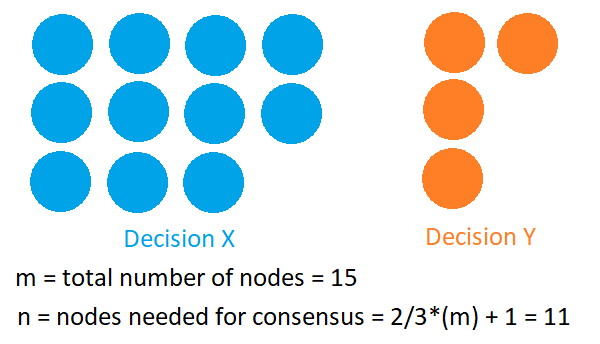

class: center, middle # Blockchain --- # 2. Consensus In short, consensus mechanisms are **protocols** that make sure all nodes are synchronised with each other and agree on which transactions are legitimate and are added to the blockchain. Common consensus algorithms: <img src="./Consensus Algorithm.png" alt=""> --- ## Byzantine Fault Tolerance (BFT) --- ## Proof Of Work (POW) <div class="chain"> <span>Bitcoin</span> <span>Ehterum</span> </div> In short: work harder, payment higher Pros: - Straight forward; - No extra meta data needed when syncing up transactions; - Huge cost for destroy Cons: - Waste energy - Slow confirmation (~10mins per block now) - Needs multiple confirmation, raise branch easily --- ## Proof Of Stake (POS) <div class="chain"> <span>Binance</span> <span>Stellar</span> </div> In short: hold more, get more Pros: - Shorten consensus time - Less "mining" energy needed as the probability is higher for big holders Cons: Still need "mining", not really resolve the business pain point; All the consensus confimrations are acutally a kind of expression of prosibility --- <div style="width: 100%; height: 50vh; overflow-y: auto;"> <img src="./POW vs POS.png" alt=""> </div> --- ## Delegated Proof Of Stake (DPOS) <div class="chain"> <span>EOS</span> <span>WAX</span> </div> Same as POS, but it does election first, only leaders (total size: 100) can produce blocks Pros: - Energy efficiency - Faster processing of transactions than PoW and PoS - Second level verfication Cons: - Still needs token to incentize - Easier to organize an attack - Without a large number of engaged users, the system will not function as intended --- ## Practical Byzantine Fault Tolerance (PBFT) <div class="chain"> <span>Hyperledger Fabric</span> <span>Zilliqa</span> </div> Pros: - High throughput - Scalable - Fast Cons: - Requires trust - somewhat centralized  --- # What to touch as a Blockchian dev asd --- ## Ethereum SDLC - Download Ethereum Studio - Build dApp: - Smart contract: Solidty/Vyper to develop - Frontend: Web3.js to connect node - Test: Use Truffle/Embark/Waffle/etc to complie, link, deployment, test - Browsers: - Blockscout - Etherchain - Etherscan - Client Apps: - MetaMask (Chrome extension) - Parity (Popular) - Mist (Official) --- ## Hyperledger Fabric - POC: use Hyperldger Composer, 30 mins to go - Build Network: Docker to download below images - CA - Orderer - Peer - CouchDB (optional) - Build App: Use Golang or NodeJS write "chaincode" (i.e. smart contract), and deploy it to peer nodes - Test it in test network - Deploy it to production network --- # Glance at other projects ## Gun ## Substrate